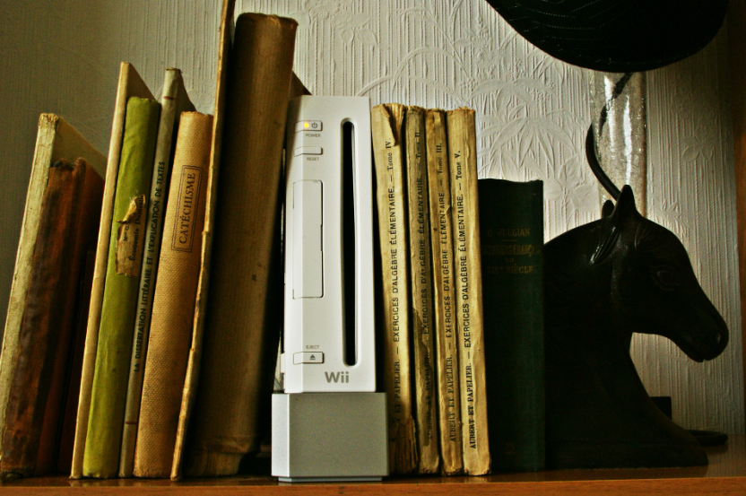
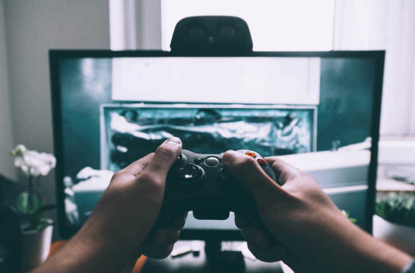
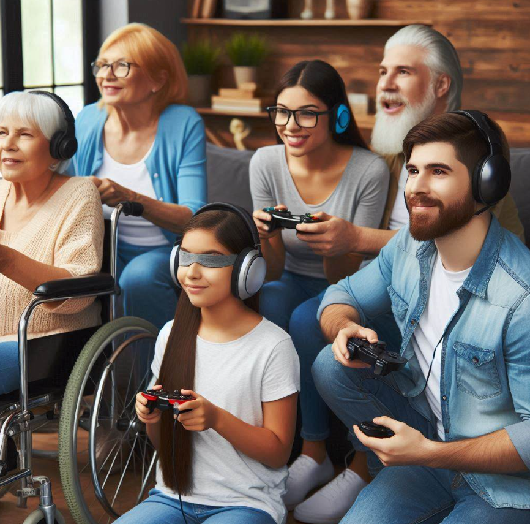

ANALISIS Y APRESIACION DE VIDEOJUEGOS
- LINEA DE TIEMPO DE LOS VIDEOJUEGOS
- ELEMENTOS NARRATIVOS
- NARRATIVA
- ANALISIS DE LA ESTRUCTURA
- PRINCIPIOS DE DISEÑO DE VIDEOJUEGOS
- JUEGO DE MESA CON TEMAS VISTOS
- 1952-Primer videojuego
- 1961- Naves
- 1972-Nacimiento de las consolas y arcades
- 1990-Doom
- 2000-Era de las consolas de la proxima generacion
- 2001 - 2010 juegos revolucionarios
- 2020 Pandemia y videojuegos
- 2022-Metaverso
- Concepto
- Personajes
- Trama
- Conflictos
- Resolucion
- Narrativa
- Jugavilidad
- Lineal
- No lineal
- Ramificado
- Personajes
- Trama
- Confiltos
- Jugabilidad
- Jugabilidad
- Inmersion
- Accesibilidad
- Ayudas visuales y ayudas auditivas
LINEA DE TIEMPO DE LOS VIDEOJUEGOS

1952 - PRIMER VIDEOJUEGO
◦ La creación del primer videojuego tiene muchas atribuciones, una de ellas es por William Higinbotham, quién fue un físico estadounidense el cual desempeño un papel importante en la creación de la Bomba atómica, este logro correr tennis for two en un osciloscopio, el cual es un medidor de corriente.

1961 Naves
◦ El científico y programador Steve Russell el cual
creó el lenguaje de programación lips para IBM
creó el primer videojuego de combate espacial.
◦ Es importante aclarar que estos videojuego ya
tenían colliders aunque no como un programador
actual lo utilizaría en Unity o en Unrreal, se utilizó
una estrategia por coincidencia de puntos, como
cuando un punto coincide con otro en un plano
cartesiano, en estos puntos de coincidencia se
cambiaba el dato a negativo y esto daba el efecto de
collider.
1972 – Nacimiento de las consolas arcade
◦ El ingeniero Ralph Baer el cual desarrolló su interés por la
electrónica poco después de participar en la guerra
estadounidense cuando su familia huía de Alemania antes de la
segunda guerra mundial, creó la primera consola de videojuegos
llamada Magnavox Odyssey, ésta ya contaba con mandos, se lanzó
con el videojuego Simon Says (Simón dice).
◦ Como dato curioso un año antes la universidad de
Stanford instalo la primera máquina arcade en el área de descanso,
la cual dio los inicios de los salones creativos.
1990 Doom
Se lanza el primer video juego 3D en primera persona ,el cual se ejecutaba en un computador con sistema operativo DOS, este video juego llamado Doom lanzado por id software, no solo innovo con videojuego 3D, también incorporo en la industria el juego multijugador online
2000 – Era de las consolas de la proxima generacion
◦ Lanzamiento de Ps2 y su gran variedad de
videojuegos en DVD.
◦ Lanzamiento de Xbox aunque no tuvo el
mismo éxito que la ps2 centro las bases
para sus futuras consolas.
◦ Nintendo lanzo la consola portátil Game
Boy Advance la cual se convirtió un éxito
instantáneo en el 2001.
◦ Nintendo lanzo la consola portátil Game
Boy Advance la cual se convirtió un éxito
instantáneo en el 2001.
◦ Nintendo lanza la consola GameCube la
cual era una consola de videojuegos
familiar, esta no tubo gran éxito pero dejo
una impresión duradera.
2001 - 2010 juegos revolucionarios
◦ Gran Theft Auto III uno de los juegos que mejor planteo la
temática de mundo abierto.
◦ Residen Evil 4 define el surrival horror con gráficos avanzados
para su época en el 2005
◦ Minecraft, se convierte en pionero permitiendo a los jugadores
construir y explorar mundos infinitos en el 2010
2020 Pandemia y videojuegos
◦ Durante la pandemia, los videojuegos han experimentado un aumento significativo en su popularidad y han transformado la forma en que las personas interactúan socialmente. Un estudio realizado por investigadores de la Universidad Jorge Tadeo Lozano en Colombia y de la Universidad Católica del Perú examinó el impacto de los videojuegos como medio de comunicación y socialización.
2022-Metaverso
◦ Metaverso se convierte en un término popular, presentando la convergencia entre mundos virtuales y la realidad, con experiencias digitales con gafas VR o AR Este término se refiere a un espacio digital compartido donde las personas pueden interactuar, trabajar, jugar y socializar en mundos virtuales.
ELEMENTOS NARRATIVOS
Concepto
El concepto es la idea central detrás del juego. Define el mundo, la premisa y la mecánica básica. Por ejemplo, en “The Legend of Zelda”, el concepto es la aventura de un héroe en un mundo de fantasía.
Personajes
Los personajes son las figuras que interactúan en el juego. Pueden ser jugables o no jugables. Desarrollar personajes interesantes y bien definidos es crucial para una buena narrativa.
Trama
La trama es la secuencia de eventos que ocurren en el juego. Incluye misiones, objetivos y giros argumentales. Por ejemplo, en “Red Dead Redemption 2”, la trama sigue la historia de Arthur Morgan y su banda de forajidos.
Conflictos
Los conflictos generan tensión y desafío. Pueden ser conflictos internos (luchas personales) o externos (batallas contra enemigos). Los conflictos dan sentido a la narrativa.
Resolución
La resolución es cómo se cierran los conflictos. Puede ser un final feliz o trágico. En “Mass Effect”, las decisiones del jugador afectan la resolución de la historia
Narrativa
La narrativa es la forma en que se presenta la historia al jugador. Puede ser a través de cinemáticas, diálogos, documentos en el juego o incluso la exploración del mundo.
Jugabilidad
La jugabilidad es cómo el jugador interactúa con el juego. La narrativa debe integrarse de manera fluida con la jugabilidad para mantener el interés del jugador.
NARRATIVA
Leer de izquierda a derecha, y de arriba abajo siguiendo un orden determinado. Así estamos acostumbrados a leer novelas, guiones de teatro, biografías o ensayos. Para construir una obra de literatura (y cualquier otro tipo de escrito) necesitamos establecer una estructura narrativa, la herramienta que nos permitirá expresar o explicar lo que queramos transmitir. La estructura narrativa de un texto es lo que lo divide en partes pero lo que a su vez permite que sea una sola unidad. La estructura de la narración es aquello que nos permite identificar las diferentes partes de una historia o mensaje pero a su vez nos da una idea general de lo que estamos leyendo. ¿Cuántos tipos de estructura narrativa existen? Lo analizamos a continuación:
Lineal
La estructura narrativa lineal es la más famosa y fácil de reconocer. Aunque todo esto no signifique que funcione igual para todas las historias o que debamos usar esta estructura en todas nuestras obras. La estructura narrativa lineal es la que nos presenta los hechos de manera cronológica. Generalmente, empieza presentando a los protagonistas (introducción), su historia o problema (nudo) y su solución (desenlace).
No lineal
El narrador compone la historia dando saltos en el tiempo atrás (pasado) o adelante (futuro) para acabar explicando los hechos. Pueden aparecer personajes contemporáneos o aparecer personajes de diferentes épocas que, entre todos, configuran la narración final.
Narrativo Ramificado
la historia de desenvuelve la historia de acuerdo a las desiciones dentro del juego, este tipo de narrativa puede llegar a tener mas de tres finales
ANALISIS DE LA ESTRUCTURA
personajes
Protagonista: El personaje principal, cuya historia seguimos. Suele enfrentar
conflictos y evolucionar a lo largo de la trama.
Antagonista: El opuesto al protagonista, que crea obstáculos y desafíos.
Secundarios: Acompañan al protagonista y pueden tener roles importantes o cómicos.
Terciarios: Aparecen ocasionalmente y pueden ser parte del entorno o la trama.
Caracterización: La forma en que se describen y desarrollan los personajes. Incluye aspectos físicos, personalidad, motivaciones y cambios a lo largo de la historia.
Trama
La trama en los videojuegos se refiere a la historia o narrativa que guía la experiencia del jugador. Es el hilo conductor que conecta los eventos y desafíos dentro del juego. Una buena trama puede sumergir al jugador en el mundo del juego y motivarlo a avanzar.
Conflictos
Los conflictos en los videojuegos pueden ser variados y añaden profundidad a la trama. Algunos ejemplos comunes de conflictos incluyen:
Conflicto de personajes: Desacuerdos, rivalidades o alianzas entre personajes. Por ejemplo, dos héroes que no se llevan bien o un villano que traiciona a su equipo.
Conflicto interno: Luchas emocionales o dilemas morales que afectan al protagonista. Por ejemplo, decidir entre salvar a un amigo o cumplir una misión.
Conflicto con el entorno: Enfrentarse a obstáculos naturales o peligros del mundo del juego. Por ejemplo, cruzar un puente roto o sobrevivir en un entorno hostil.
Conflicto de objetivos: Cuando los objetivos de diferentes personajes chocan. Por ejemplo, dos facciones que buscan el mismo tesoro.
Jugavilidad
Incluye todos los aspectos relacionados con la mecánica del juego, los controles, la interfaz de usuario, el diseño de niveles y cualquier otro elemento que afecte la forma en que el jugador interactúa con el juego.
Una buena jugabilidad es fundamental para el éxito de un videojuego, ya que influye en la diversión, el desafío y la inmersión del jugador. Los desarrolladores de juegos trabajan en la jugabilidad para garantizar que sea intuitiva, satisfactoria y atractiva para el público objetivo.

PRINCIPIOS DE DISEÑO DE VIDEOJUEGOS
Los principios de diseño de videojuegos son fundamentos y/o normas que los desarrolladores de juegos utilizan para crear experiencias de juego efectivas, atractivas y satisfactorias para los jugadores.
Jugabilidad
Controles intuitivos: Los controles deben ser fáciles de entender y usar para que el jugador pueda concentrarse en la acción del juego Mecánicas de juego sólidas: Las mecánicas de juego son las reglas y sistemas que rigen la interacción del jugador. Estas deben ser coherentes y ofrecer suficiente profundidad para mantener el interés a lo largo del juego. Desafíos equilibrados: Los desafíos en el juego deben ser estimulantes pero no abrumadores. Deben aumentar en dificultad de manera gradual para que el jugador pueda progresar y sentirse logrado. Recompensas significativas: Las recompensas, ya sean puntos, objetos o avances en la historia, deben ser gratificantes y motivar al jugador a seguir jugando.
Inmersión
La inmersión es clave para crear una experiencia envolvente en un juego. Narrativa convincente: Una buena historia puede involucrar emocionalmente al jugador y motivarlo a continuar jugando para descubrir qué sucede a continuación. Ambientación y diseño de mundo: Los escenarios y entornos del juego deben ser coherentes, detallados y visualmente atractivos para sumergir al jugador en el universo del juego. Sonido y música adecuados: Los efectos de sonido y la música pueden mejorar la atmósfera del juego y hacer que la experiencia sea más realista y emocionante.
Accesibilidad
Un juego accesible es aquel que puede ser disfrutado por una amplia variedad de jugadores. Opciones de dificultad: Permitir al jugador ajustar la dificultad del juego según sus habilidades y preferencias. Controles personalizables: Ofrecer la posibilidad de personalizar los controles para adaptarse a las necesidades individuales de cada jugador. Modos de juego alternativos: Incluir modos de juego que sean más accesibles para jugadores menos experimentados o con limitaciones físicas. Ayudas visuales y auditivas: Proporcionar indicadores visuales y auditivos claros para guiar al jugador y proporcionar retroalimentación.
Ayudas Visuales y ayudas auditivas
Estas ayudas apoyaran al jugador en el transcurso del nivel, ya que funcionaran como guía para que el jugador tome el camino correcto y siempre sepa a que lugar se debe dirigir, para estas guías podemos utilizar sonidos, luces o la típica guía amarilla
MECANICAS DE JUEGO
Las mecanicas de juego van de la mano con la experiencia de usuario y a la narrativa del videojuego.
Mecanicas vasicas
1.Correr
2.saltar
3.caminar
4.Agacharse
5.Golpear
6.Interactuar con objeto